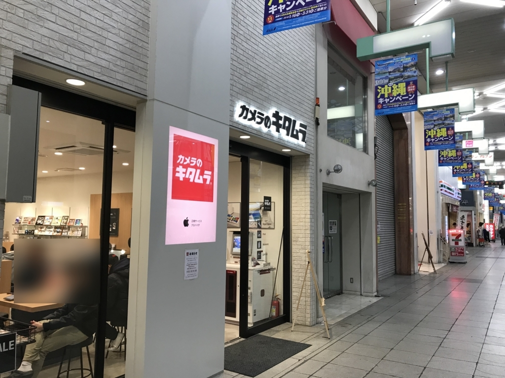
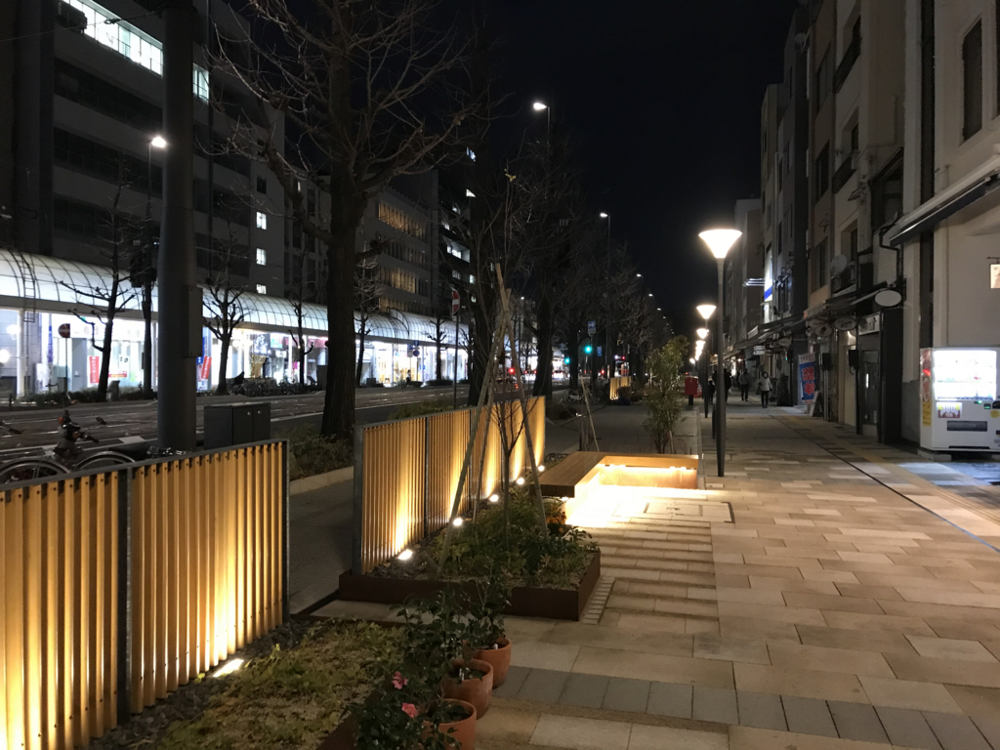
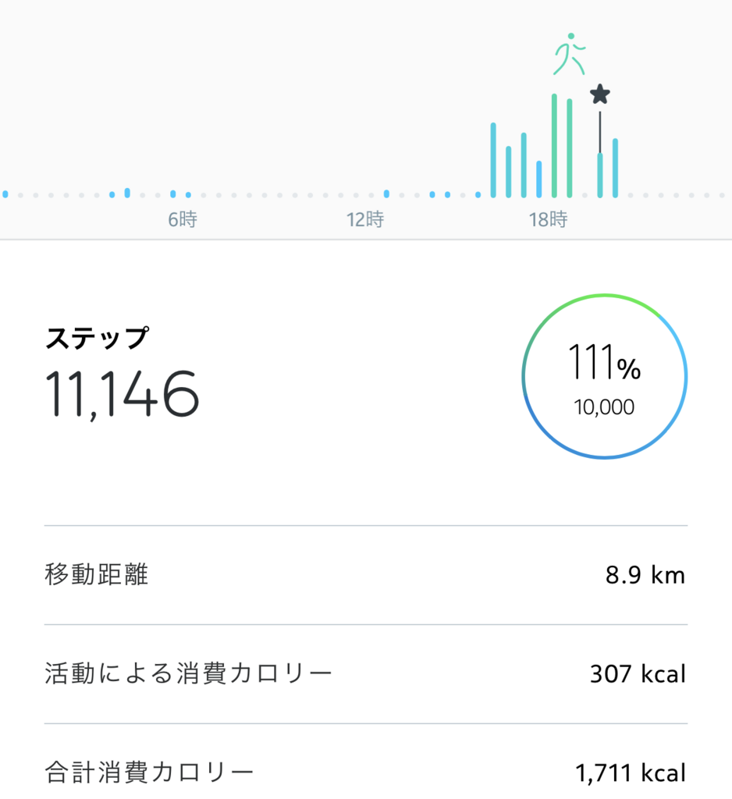

2018年1月15日の日記：iPad の修理、本屋、散歩、焼きカレー
執筆日時：

すっかり生活リズムが乱れているのは、運動不足か、仕事からの逃避か。多分どっちもだと思うので、一石二鳥、仕事を4時で切り上げて街に出かけた。散歩がてら、大街道のキタムラまで iPad Pro の修理に行く。
以前、バイクで徳島まで出かけたとき、パッセンジャーシートに iPad を括り付けて行ったのだけど、ちょっとキツく締め過ぎたみたいで画面に軽くヒビがいってしまった。
写真は撮ってないのだけど、そのヒビはよく見ないと単なる傷に見える程度の薄いもので、利用には差し障りがない。なのでそのまま使い続けていたのだけど、年末年始の旅行などに携帯しているうちに、とうとう黒いモノが染み出してくるようになった。最近では日に日にその黒いモノの占領地域が広がるようになり、とうとうビデオコンテンツの再生域まで犯すに至ってようやく、修理に出す決意を固めたというわけだ。
幸い Apple Care に入っていたため、修理代は4,000円程度の致命傷で済んだ。その場での部品交換は行っておらず、新品（というけど再生品だろう）との交換になるとの由。代替品の到着までしばらく iPad なしの生活になるが、まぁ、そんなに困らないから別にいいや。

帰りはジュンク堂に寄り、本をしこたま買い込み、袋をぶらぶらさせながら、歩いて山越まで帰った。最近、中途半場に改装させた花園町を通り、堀端を北に向かって黙々と歩く。途中、原付のお姉ちゃんがパトカーにつかまってた（合掌……よく見てなかったけど、すごくマナーが悪いということもなかったので、軽度の注意ぐらいで済めばよいのだがと同情する。
途中、どこかに寄ってなにか食べようかなと思ったけど、お独りさまバリアを感じてどの店にも入れぬ。結局「たまには近所の店にカネを落とさないと、なくなってしまっては困る」と思い、家の近くにあるインドカレー屋さんに行くことにした（ほんとは空いている方の中華屋さんに行こうと思ったが、月曜日だからか閉まっていた……）。
このインドカレー屋さんはひそかなお気に入り。なんといっても CoCo 壱番屋のすぐ隣にあるのに潰れていないというところがいい。むかしはもうちょっとインドっぽかった気がするんだけど、最近少し改装されたみたいで、メニューも日本人向けっぽくなった。個人的にはもっとインドインドしてる方が好きなんだけど、今は日本語が微妙に通じない点ぐらいにしかインドっぽさがない*1。
名物・焼きカレー（野菜けっこうゴテゴテ＊チーズたっぷり）を食べながら、小一時間ほど鉱物の本を読んで過ごした。
今日読んだところは誕生石に関する薀蓄。自分は宝石の類にはまったく興味がないのだけど、誕生石だったら、まぁまぁ、身近に感じる。ちなみにうちは4月生まれ屋からダイヤモンドやな。ルビーとかサファイヤとかの方がよかったけど……
ちなみに、ルビーとサファイヤは同じコランダム（鋼玉）の一種で、いわば色違いの兄弟なんだそうな。兄弟つながりで言えば、アクアマリンとエメラルドも緑柱石（ベリル）でくくれるみたい。この著者は歴史にも造詣が深くて、中国の璧の話やナルシスト何晏*2、中央アジアのラピスラズリの話なんかも面白いなー。
でも、青いトパーズで火傷をする話はちょっと怖かった。無色のトパーズは放射線処理で青色にすることができるみたいだけど、残留放射線が残った状態で指輪にして売ったものだから、指に火傷を負ったのだという。もし11月生まれの女の子にトパーズを！……なんてことになったときは気をつけないとな（← 役に立つ時が来るんやろかね？

今日は大変よく歩きました。